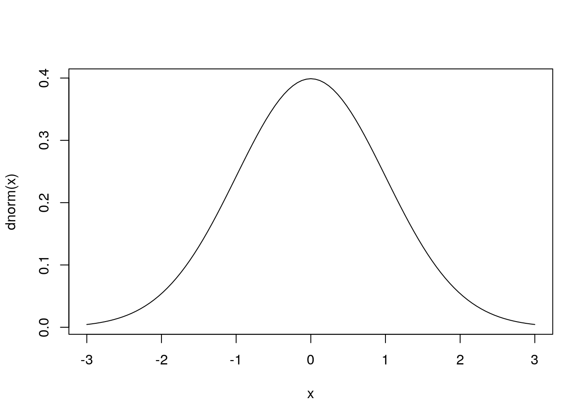

14 Loops, Functionals, and Simulation
In this chapter, we cover three seperate topics: loops, functionals, and simulation. Although they are distinct from one another, we’ll cover them together because they are quite useful in combination. The chapter outline is as follows.
- Loops
- Functionals
- Simulation
14.1 Loops
As you may have anticipated from your data manipulation tasks so far, performing the same task over and over again on new pieces of data is a common problem. R makes a lot of this easy for us by assuming that whenever we are working with a vector of items that we want to repeat operations for all of those items. For example,
my_vec <- 10:15
my_vec^2## [1] 100 121 144 169 196 225Sometimes, though, we want more control than to do exactly the same thing to each item. Maybe we want to get cumulative sums, which require us to know what the other values in the vector are. For example, consider a vector of monthly profits.
set.seed(314159)
monthly_profits <- rpois(12, lambda = 100) # 12 months with $100 average
monthly_profits## [1] 92 97 103 96 96 92 84 83 94 83 95 111I can do that with a for loop.
cumulative_profits <- 0
for(m in 1:12){
cumulative_profits <- cumulative_profits + monthly_profits[m]
print(cumulative_profits)
}## [1] 92
## [1] 189
## [1] 292
## [1] 388
## [1] 484
## [1] 576
## [1] 660
## [1] 743
## [1] 837
## [1] 920
## [1] 1015
## [1] 1126This type of loop consists of three parts:
- The index variable,
m(you can name it whatever you want) - The vector
mgrabs its values from (here,1:12, but can be whatever you want) - The commands to perform for each increment of
m(everything between the{})
In this case, our #3 is a little trickier because we created a variable outside the loop (cumulative_profits), which we then modified inside the loop. We did that here to demonstrate the power of for loops - they give a lot of control.
14.1.1 When should I use for loops?
Generally, you should avoid them in R. The reason is that they require several lines of code to perform the same task that specialized R functions already perform in one. For example, in our cumulative profits case above, R has a special function cumsum() that can already to this same task for us.
cumsum(monthly_profits)## [1] 92 189 292 388 484 576 660 743 837 920 1015 1126That’s much easier to read - and we don’t have to worry about recoding it every time. There are other reasons to try to avoid for loops if you can, including the fact that sometimes (though not all the time) they can be memory inefficient. This used to be a bigger deal a few decades ago, but with modern computers will only matter if you are working on something that has millions of cases (i.e., “big” data).
HOWEVER! There is one case when you will need to use a for loop, when you need to modify something in place. For those special cases, [see this resource]((http://adv-r.had.co.nz/Functionals.html#functionals-not).
14.2 Functionals
Functionals are functions that apply other functions for you - essentially, they are automated loops. With a functional, you don’t have to think about your indexing variable or the vector it draws its values from, you just need to keep track of the function you want applied to everything. Functionals existed in base R, but there is also now a tidyverse version of them. We’ll cover both!
14.2.1 The base R way
Functionals in R come from the “apply” family, so they all have names that end in “-apply.” The most commonly used is lapply() (pronounced “ell-apply”). This functional takes a list or vector as its first argument and a function to apply to each element of the list as its second argument.
double_n_square <- function(x){
(2*x)^2
}
my_vals <- 20:25
lapply(my_vals, double_n_square) # note I don't need () for the function name## [[1]]
## [1] 1600
##
## [[2]]
## [1] 1764
##
## [[3]]
## [1] 1936
##
## [[4]]
## [1] 2116
##
## [[5]]
## [1] 2304
##
## [[6]]
## [1] 2500Above, we used a custom function, but you can also use a built-in R function.
lapply(my_vals, sqrt)## [[1]]
## [1] 4.472136
##
## [[2]]
## [1] 4.582576
##
## [[3]]
## [1] 4.690416
##
## [[4]]
## [1] 4.795832
##
## [[5]]
## [1] 4.898979
##
## [[6]]
## [1] 5Also, we can use an “anonymous” function. This is a function without a name that we feed to lapply(). Once the lapply() operation is over, our function disappears.
lapply(my_vals, function(val){
val/3
})## [[1]]
## [1] 6.666667
##
## [[2]]
## [1] 7
##
## [[3]]
## [1] 7.333333
##
## [[4]]
## [1] 7.666667
##
## [[5]]
## [1] 8
##
## [[6]]
## [1] 8.333333Here, we used a simply case where an anonymous function probably wasn’t necessary. But you can imagine more complicated situations where it would be helpful. For example, if I wanted to square all the odd values and take the square root of all the even ones.
lapply(my_vals, function(val){
is_odd <- val %% 2 != 0
if(is_odd){
val <- val^2
} else {
val <- sqrt(val)
}
val
})## [[1]]
## [1] 4.472136
##
## [[2]]
## [1] 441
##
## [[3]]
## [1] 4.690416
##
## [[4]]
## [1] 529
##
## [[5]]
## [1] 4.898979
##
## [[6]]
## [1] 62514.2.2 sapply() and Unlisting
Note that what lapply() gives us is actually a list, no a vector. If we want our output to go back to a simple vector, we can either use sapply() (“simple apply”) or unlist() after a lapply()
sapply(my_vals, function(val){
is_odd <- val %% 2 != 0
if(is_odd){
val <- val^2
} else {
val <- sqrt(val)
}
val
})## [1] 4.472136 441.000000 4.690416 529.000000 4.898979 625.000000output <- lapply(my_vals, function(val){
is_odd <- val %% 2 != 0
if(is_odd){
val <- val^2
} else {
val <- sqrt(val)
}
val
})
unlist(output)## [1] 4.472136 441.000000 4.690416 529.000000 4.898979 625.00000014.3 The tidyverse functionals
The tidyverse also includes its own set of functionals, which are all some version of map(). These are nice because they use a special notation that allows you to refer to each element of your vector with a ~ .x. The ~ says “look for the .x”, the .x says “this is value I am currently working on”.
library(tidyverse)
my_vals <- 100:105
map(my_vals, ~ .x/2)## [[1]]
## [1] 50
##
## [[2]]
## [1] 50.5
##
## [[3]]
## [1] 51
##
## [[4]]
## [1] 51.5
##
## [[5]]
## [1] 52
##
## [[6]]
## [1] 52.5If I know all of my outputs are going to be a particular type (e.g., logical, character, or double), then I can use the special map_lgl(), map_chr(), and map_dbl() functions to return a vector right away.
map_dbl(my_vals, ~ .x/2)## [1] 50.0 50.5 51.0 51.5 52.0 52.5I can also use map() like lapply() if I want, I just remove the ~ .x notation and replace it with a function name, like above.
map_dbl(my_vals, sqrt)## [1] 10.00000 10.04988 10.09950 10.14889 10.19804 10.2469514.4 Simulation
The field of statistics is premised on one primary insight: even in a world of randomness, I generally know more than nothing. With that insight in mind, the field is dedicated to quantifying what kinds of things are knowable, and to what degree, when there is significant uncertainty at play. Sometimes, this relatively easy to do with a known distribution. For example, if we know a distribution is Normal, then we also know that values near the mean will be much more common than values farther away from the mean - and we can quantify how much more common.
curve(dnorm(x), from = -3, to = 3)
Other times, quantifying how likely something is to happen can be so complicated that a closed-form formula simply does not exist - or if it did exist, it would be too difficult to work with. In those cases, we run a simulation.
14.4.1 A worked example
In what follows, we will explore what happens when there are true quadratic effects in the population, but we mistakenly model an interaction instead (when no true interaction exists). Will we accidentally get a significant interaction effect? How often? Does it matter how correlated the predictors are?
To begin, when running a simulation, we generally need a few pieces of information: the different correlations we want to test, the number of samples we want (often, people just choose 1,000), the number of cases per sample, and the number of total cases we’ll need overall. We’ll put these together ahead of time so they are easily available later.
obs_per_sample <- 100
samps_per_cor <- 1000
cor_levels <- seq(from = 0, to = .80, length.out = 5)
total_obs <- length(cor_levels)*samps_per_cor*obs_per_sampleTo create correlated variables, we will need the mvtnorm package, which can create multivariate normal predictors for us. All we need to do is make the covariance matrix it wants to sample from. Because we are going to be doing this once for each correlation level, we’ll wrap it in a function called gen_sample().
library(tidyverse)
library(mvtnorm)
gen_sample <- function(n, cor_level){
cov_matrix <- matrix(data = c(1, cor_level, cor_level, 1), nrow = 2)
rmvnorm(n, sigma = cov_matrix) %>%
as.data.frame() %>%
set_names(c('x', 'z'))
}
# a preview
x <- gen_sample(n = 1000, cor_level = .30)
head(x)## x z
## 1 0.9147473 -0.9707036
## 2 -1.1417592 -0.1430907
## 3 1.0704854 0.2567575
## 4 1.0015961 0.9372988
## 5 0.9864337 0.7464072
## 6 -1.5673610 -0.1426067cor(x)## x z
## x 1.0000000 0.2866281
## z 0.2866281 1.0000000Now that we have our predictors, we’ll need a place to put them. The expand.grid() function is especially useful here. I creates a dataframe out of the vectors we give it, but with every possible combination of every vector element. See here…
df <- expand.grid(r = cor_levels, samp = 1:samps_per_cor, obs = 1:obs_per_sample)
head(df, n = 10)## r samp obs
## 1 0.0 1 1
## 2 0.2 1 1
## 3 0.4 1 1
## 4 0.6 1 1
## 5 0.8 1 1
## 6 0.0 2 1
## 7 0.2 2 1
## 8 0.4 2 1
## 9 0.6 2 1
## 10 0.8 2 1Note that the order you enter your vectors will change the ordering of the elements. Because we will be entering our predictors blocked by correlation, we’ll want to sort by correlation to make sure they go to the right place later on.
df <- df %>%
arrange(r, samp, obs)
head(df, n = 10)## r samp obs
## 1 0 1 1
## 2 0 1 2
## 3 0 1 3
## 4 0 1 4
## 5 0 1 5
## 6 0 1 6
## 7 0 1 7
## 8 0 1 8
## 9 0 1 9
## 10 0 1 10Now, let’s use the map() function to generate correlated predictors, with varying levels of correlation. We’ll bind the results, then store the result in two new columns in our dataframe.
df[, c('x', 'z')] <- map(cor_levels, ~ gen_sample(samps_per_cor*obs_per_sample, .x)) %>%
bind_rows()
head(df)## r samp obs x z
## 1 0 1 1 2.36393421 -0.2187102
## 2 0 1 2 -0.90268064 -0.7749229
## 3 0 1 3 -0.09644070 2.0483899
## 4 0 1 4 0.25223212 2.3856130
## 5 0 1 5 -0.66729581 -0.9352575
## 6 0 1 6 0.02098636 -0.1190282With out predictors, let’s make some variables, including out outcome Y.
df <- df %>%
mutate(
x_sq = x^2,
z_sq = z^2,
int = x*z,
y = 2*x_sq + rnorm(n()))Now, we’re ready to collect some results. We’ll grab two sets: one where we run a regression including an interaction, but no quadratic terms, then another where we run a regression with both an interaction and quadratic terms. This often takes a while…
int_only_results <- df %>%
group_by(r, samp) %>%
do(broom::tidy(lm(y ~ x + z + int, data = .))) %>%
filter(term == 'int') %>%
group_by(r) %>%
summarise(false_pos = sum(p.value < .05)/n())Still taking a while…
int_and_quad_results <- df %>%
group_by(r, samp) %>%
do(broom::tidy(lm(y ~ x + z + int + x_sq + z_sq, data = .))) %>%
filter(term == 'int') %>%
group_by(r) %>%
summarise(false_pos = sum(p.value < .05)/n())Now let’s compare results!
bind_rows(int_only_results, int_and_quad_results, .id = 'model') %>%
mutate(model = ifelse(model == 1, 'int_only', 'quads_too')) %>%
spread(model, false_pos)## # A tibble: 5 x 3
## r int_only quads_too
## <dbl> <dbl> <dbl>
## 1 0 0.299 0.037
## 2 0.2 0.626 0.05
## 3 0.4 0.961 0.042
## 4 0.6 0.999 0.057
## 5 0.8 1 0.045